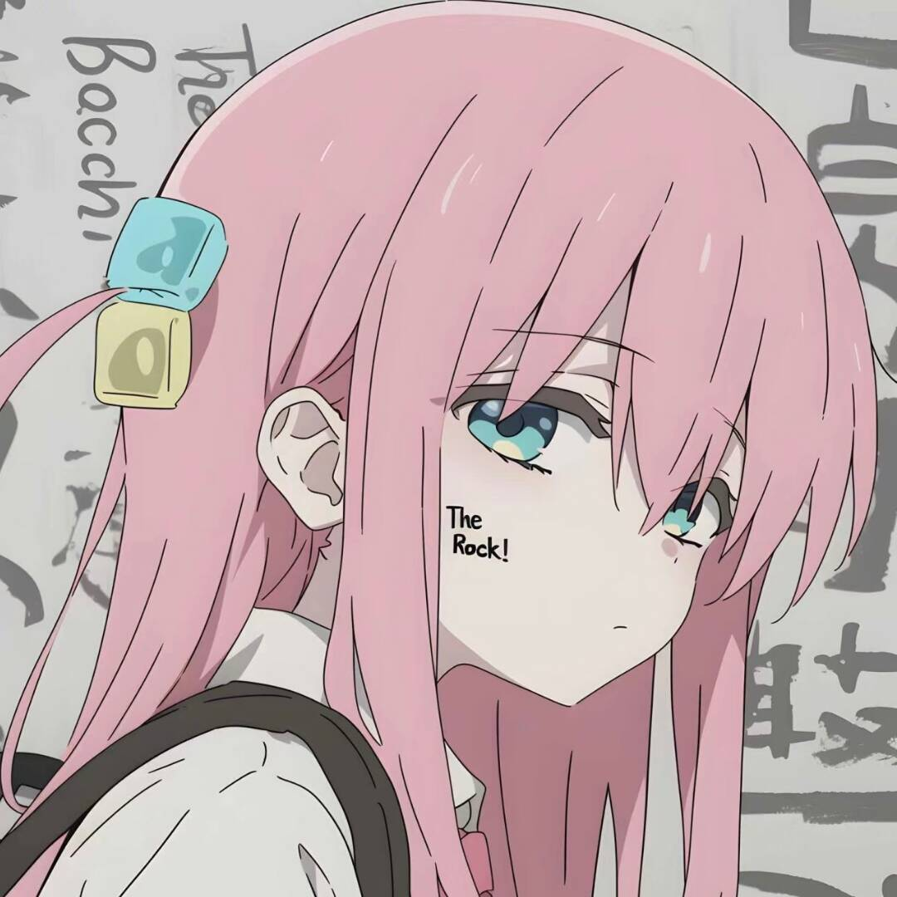

01 / ABOUT
普通生活，长期好奇。
工作日是华为的一名工程师。下班后，我把时间交给吉他、数学、游戏和一点自己的代码。
我喜欢把复杂的东西慢慢拆开，也喜欢把工具做得简单、安静、真正好用。
- Music
- Mathematics
- Games
- Building
02 / SELECTED WORK
最近在做
01
在线节拍器
为练琴设计的网页节拍器。支持拍号、细分节奏、重音、音色和 Tap Tempo。
02
遗物警察局
《黑夜君临》遗物合法检测工具。遗物成分复杂？先送检。
以上工具均为独立项目，此处仅保留入口。
03 / OFF SCREEN
屏幕之外
NOW PLAYING
吉他，和一点孤独摇滚
安静并不意味着没有声音。喜欢抱着吉他，在一次次不完美的练习里找到自己的节奏。
04 / CONTACT